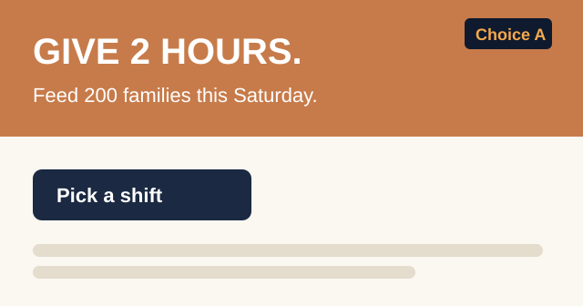
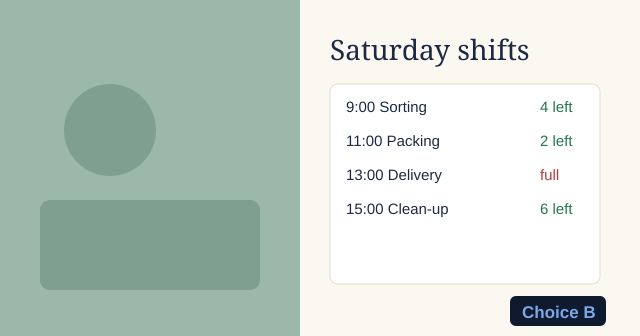

Host1Stage2Build3History4
Claude wrapped upJoin 4821 · 18 here- 10:46Claude showedThe shift calendar is up

- 10:44Decided · Ask 2Build reminder texts nextan idea from a phone→9 of 14 voted for it→Claude has it
- 10:31Decided · Ask 1Calm photo and the shift calendar


- 10:22The room saidIt has to work on old phones